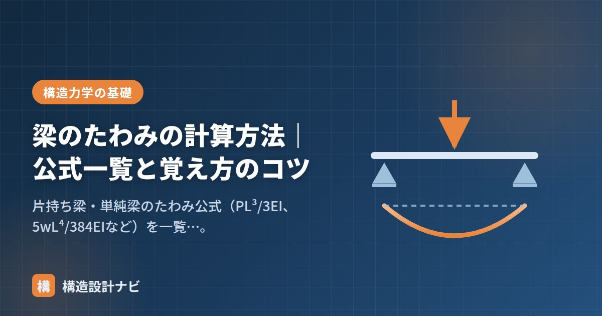

梁のたわみの計算方法｜公式一覧と覚え方のコツ

たわみは、荷重を受けた梁がどれだけ変形するかを表す量です。構造設計では強度（壊れないこと）だけでなく、使用上支障のない変形に収めることも求められます。建築士試験でも頻出のテーマです。
たわみ公式の一覧
代表的な支持条件・荷重条件のたわみ（最大値 δ）は次のとおりです。
| 支持条件 | 荷重条件 | 最大たわみ δ |
|---|---|---|
| 片持ち梁 | 先端に集中荷重 P | PL³ / 3EI |
| 片持ち梁 | 等分布荷重 w | wL⁴ / 8EI |
| 単純梁 | 中央に集中荷重 P | PL³ / 48EI |
| 単純梁 | 等分布荷重 w | 5wL⁴ / 384EI |
| 両端固定梁 | 中央に集中荷重 P | PL³ / 192EI |
| 両端固定梁 | 等分布荷重 w | wL⁴ / 384EI |
図：等分布荷重 w を受ける単純梁。中央で最大たわみ δ が生じる
公式の構造を理解すれば覚えやすい
6つの公式を丸暗記する必要はありません。すべての公式は次の形をしています。
- 集中荷重なら PL³、等分布荷重なら wL⁴ が分子（wL が全荷重に相当するため、次数がひとつ上がる）。
- 分母は必ず EI ×（係数）。EI は「曲げ剛性」で、大きいほどたわみは小さい。
- 係数は拘束が強いほど大きくなる（＝たわみが小さくなる）：片持ち 3 → 単純 48 → 両端固定 192。
- 単純梁・中央集中の「48」を基準に、両端固定はその4倍の「192」。
- 等分布の「5/384」は、両端固定になると分子の5が取れて「1/384」。
- スパン L の影響が最も大きい（3乗〜4乗）。スパンが2倍になるとたわみは8〜16倍。
計算例：単純梁のたわみ
スパン L = 6m の鉄骨単純梁（H-400×200×8×13、I = 2.37×10⁸ mm⁴、E = 2.05×10⁵ N/mm²）に、等分布荷重 w = 10 kN/m が作用する場合：
スパンに対する比率は δ/L = 3.5/6000 ≒ 1/1700 で、一般的な制限値より十分小さく収まっています。
たわみの制限値
建築の構造設計では、たわみそのものの値よりもスパンに対する比率で管理します。建築基準法施行令第82条にもとづく告示では、梁のたわみ（変形増大係数を考慮した値）をスパンの1/250以下とすることが原則とされています。
- たわみが大きいと、仕上げ材のひび割れ、建具の開閉不良、振動・歩行感の悪化につながる。
- RC造ではクリープによる長期的な変形増大を考慮する（変形増大係数）。
- 片持ち梁は変形が出やすいため、実務ではより厳しめに管理することが多い。
たわみ計算に必要な断面二次モーメント I の意味と求め方は「断面二次モーメントとは？」で解説しています。I の計算は断面性能計算ツールが便利です。
実務でたわみが本当に問題になるのは強度不足より先に、歩いたときの「ふわつき感」であることが多いです。計算上1/250を満たしていてもスパンの長い床は歩行振動の観点で別途確認しますし、鉄骨梁は架設時に上向きのむくり（キャンバー）を付けて長期たわみを相殺する設計も一般的です。
支持条件でたわみはどれだけ変わるか（図解）
同じ荷重・同じスパンでも、端部の支持条件によってたわみは大きく変わります。
係数を比べると、片持ち梁（1/8）→単純梁（5/384）→両端固定梁（1/384）の順に小さくなります。片持ち梁と両端固定梁のたわみの比は48対1。端部を固定できるかどうかが、変形の大小を決定的に左右することがわかります。
たわみが大きいときの対処法
たわみが制限値を超えたとき、どの手を打つのが有効かを整理します。式 δ ∝ wL⁴/EI から考えると、対策の効果が見えてきます。
| 対策 | 効果 | 備考 |
|---|---|---|
| 梁せいを大きくする | 非常に大きい（せいの3乗でIが増える） | もっとも効率的。せいを1.2倍にすればIは約1.7倍 |
| スパンを短くする | 非常に大きい（4乗で効く） | 小梁を追加して支持点を増やす。計画変更が必要 |
| 梁幅を大きくする | 小さい（幅に比例するだけ） | 効率が悪い。せいを増やせない場合の次善策 |
| 材料を高強度にする | 効果なし | Eは鋼種によらずほぼ一定。強度を上げてもたわみは減らない |
| むくりをつける | 見た目の改善 | あらかじめ上に反らせておく。たわみ量自体は変わらない |
スパンが長い梁では、応力度の検定には余裕があるのに、たわみの制限で断面が決まることが少なくありません。とくに鉄骨梁は、高強度鋼を使ってもヤング係数が変わらないため、この傾向が顕著です。設計の初期段階で「この梁はたわみで決まりそうか、強度で決まりそうか」を見極めておくと、断面計画の手戻りが減ります。
よくある質問
Q1. たわみの制限値はなぜスパンの1/250なのですか？
梁自体の安全性ではなく、使用上の支障を防ぐための制限だからです。たわみが大きいと、天井や間仕切りにひび割れが生じる、建具の開閉に支障が出る、床が波打って歩行感が悪くなる、といった不具合につながります。1/250は、これらの支障が生じにくい変形の目安として定められた値です。片持ち梁や、たわみが目立ちやすい部位では、より厳しく管理することもあります。
Q2. RC梁のたわみ計算で変形増大係数を掛けるのはなぜですか？
コンクリートのクリープと乾燥収縮によって、長期的にたわみが増大するためです。荷重を載せた直後の弾性たわみに対して、時間の経過とともに変形が進行し、最終的に数倍になることがあります。この長期的な増大を見込むのが変形増大係数で、一般に16程度（弾性たわみの16倍）を用いてスパンの1/250以下を確認します。鉄骨造にはこの現象がないため、係数は1.0です。
Q3. たわみは荷重のどの組み合わせで検討しますか？
原則として長期荷重（固定荷重＋積載荷重）に対して検討します。地震や暴風は短時間の荷重であり、その瞬間の変形は層間変形角で別途確認するため、たわみの検討には含めません。積雪については、多雪区域では長期の組み合わせに含める場合があります。なお、たわみの検討で用いる積載荷重は、床用の値を用いるのが基本です。
まとめ
- たわみ公式は「荷重項（PL³ or wL⁴）÷ EI × 係数」という共通構造で覚える。
- スパン L の影響が最大（3〜4乗）。スパンが伸びる設計ではたわみ検討が支配的になりやすい。
- 実務ではたわみをスパンの1/250以下などの比率で管理する。